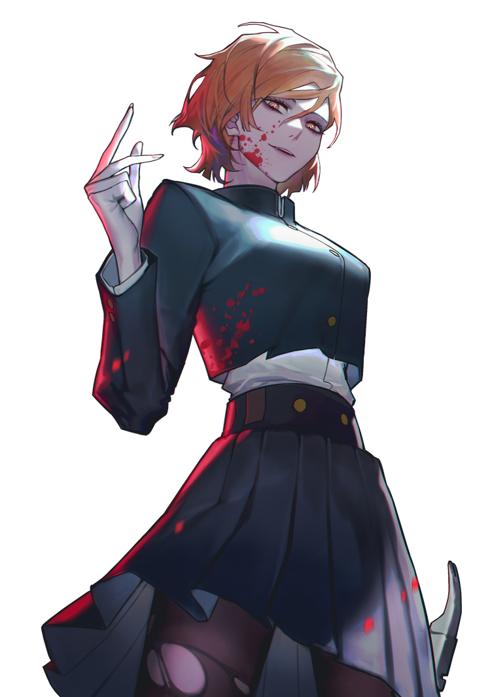

#3 Jujutsu Sorcerer
釘崎野 薔薇
Kugisaki Nobara
Nobara is a relatively short girl with a slim figure. She has mid-length orange hair that reaches to her neck that is styled with bangs that cover the right side of her forehead. Nobara has orange eyes, long eyelashes, and thin eyebrows of the same color.
Abilities Equipment
